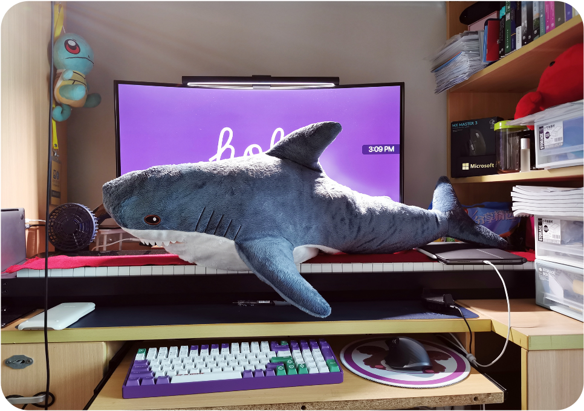
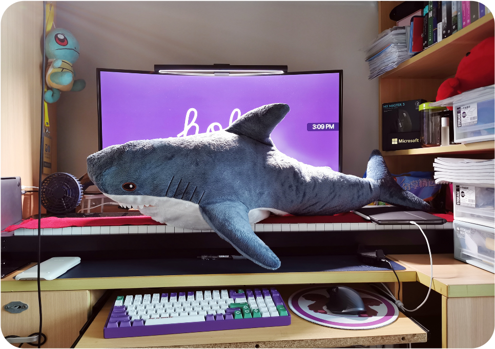

Hi there, I'm Michael Huang 👋
- I'm a master student of Information Science 🔍 @University of Michigan
- I got the B.Eng 💻 @Shanghai
Jiao
Tong University @UM-SJTU Joint
Institute
- Major: Electrical and Computer Engineering (ECE)
- Dual Minor: Computer Science (CS) & Entrepreneurship
- I was an exchange student in Computer Science (CS) @UW-Madison
Projects
Here are some selected projects as portfolio, you can click the demo card for
more details.
Also, you can find some more interesting projects in my Github
Account.

IIFire: Intelligent firefighting system based on IoT & FAHP algorithm
IIFire is an integrated system deployed on
government servers of Shanghai fire brigade, which detects potential fire hazard and report
real-life fire alarms in buildings to save people's life and money. Currently, IIFire is
connected with over 7 million IoT devices in China.
The core data-processing part is driven by Computer Vision & Fuzzy Analytic
Hierarchy Process (FAHP) algorithm. And IIFire comes with an webpage interface developed
with React.js and a cross-platform app developed with React Native. The backend is
built with FastAPI and the database is
powered by MongoDB.

SmarTemp: Temperature Measure & Manage Assistant
SmarTemp is an efficient tool for temperature measurement & management in COVID-19. SmarTemp
consists of a WeChat mini-program developed with JavaScript, HTML and CSS, and a
matched infrared thermometer which can be connected to mobiles via Bluetooth.

Mumsh: A Mini Shell Written in C
Mumsh is a mini shell supporting both basic shell functionalities such as I/O redirection,
arbitrarily-deep pipes, background jobs, incomplete input handling, quotation mark parsing and
CTRL-C interruption, as well as advanced features such as tab-triggered
hint, auto completion and history smart search.
Here are some selected projects as portfolio, you can click the demo card for more details.
Also, you can find some more interesting projects in my Github Account.
IIFire: Intelligent firefighting system based on IoT & FAHP algorithm
IIFire is an integrated system deployed on government servers of Shanghai fire brigade, which detects potential fire hazard and report real-life fire alarms in buildings to save people's life and money. Currently, IIFire is connected with over 7 million IoT devices in China.
The core data-processing part is driven by Computer Vision & Fuzzy Analytic Hierarchy Process (FAHP) algorithm. And IIFire comes with an webpage interface developed with React.js and a cross-platform app developed with React Native. The backend is built with FastAPI and the database is powered by MongoDB.
SmarTemp: Temperature Measure & Manage Assistant
SmarTemp is an efficient tool for temperature measurement & management in COVID-19. SmarTemp consists of a WeChat mini-program developed with JavaScript, HTML and CSS, and a matched infrared thermometer which can be connected to mobiles via Bluetooth.
Mumsh: A Mini Shell Written in C
Mumsh is a mini shell supporting both basic shell functionalities such as I/O redirection, arbitrarily-deep pipes, background jobs, incomplete input handling, quotation mark parsing and CTRL-C interruption, as well as advanced features such as tab-triggered hint, auto completion and history smart search.